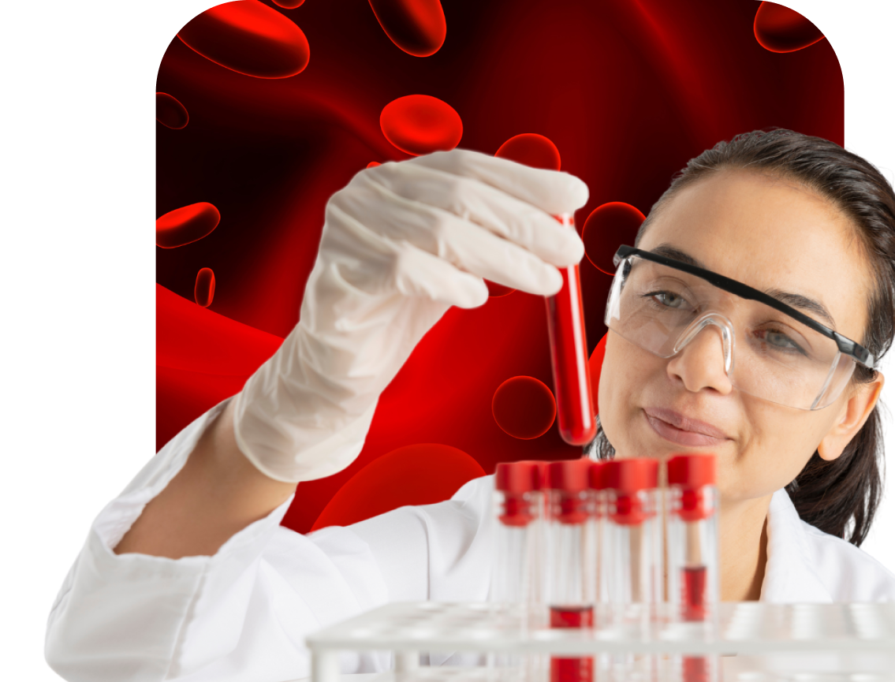

Primeiramente, as hemácias possuem formato bicôncavo, que lembra uma rosquinha. Isso significa que a periferia delas é mais espessa que a sua porção central, o que maximiza a superfície total da membrana celular, facilitando a troca e o transporte dos gases.
Além disso, as hemácias não possuem núcleos celulares (são anucleadas) e nenhuma outra organela intracelular.
As duas únicas estruturas deixadas são o citoplasma e a membrana celular que o reveste. As hemácias também se destacam por sua ausência de núcleo e, portanto, ausência de material genético. Em razão dessa característica, as hemácias são células que vivem por um período curto de tempo e são incapazes de se dividir.
ESTRUTURA
